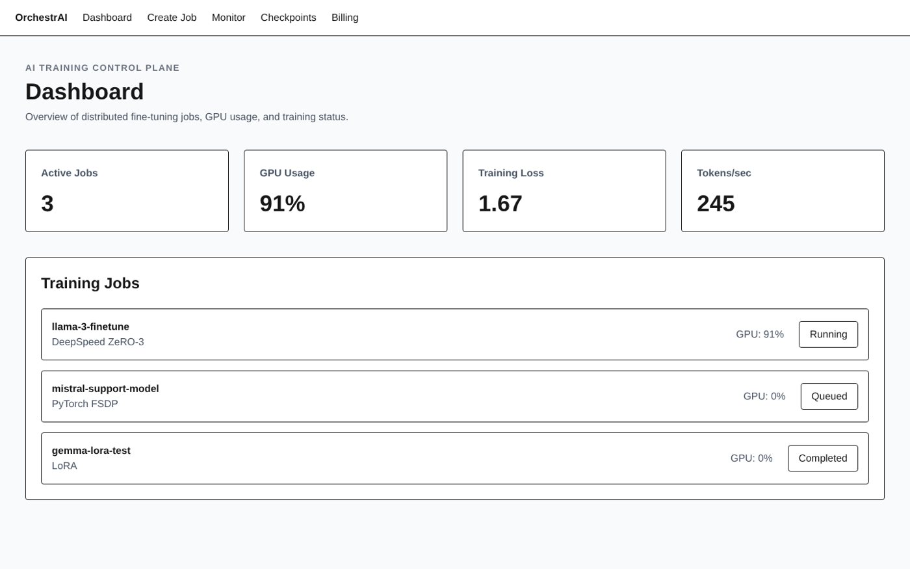
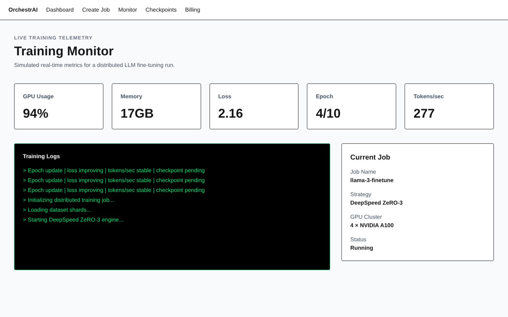
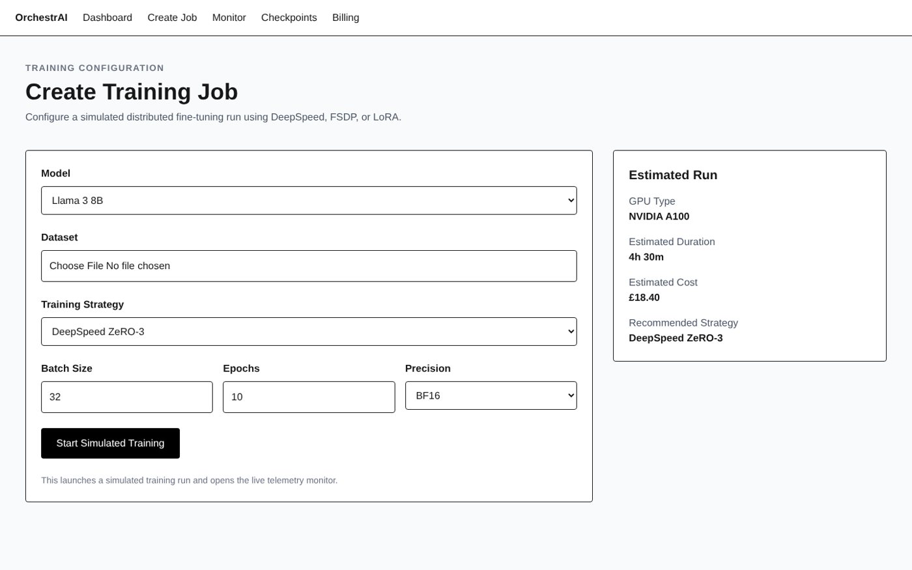
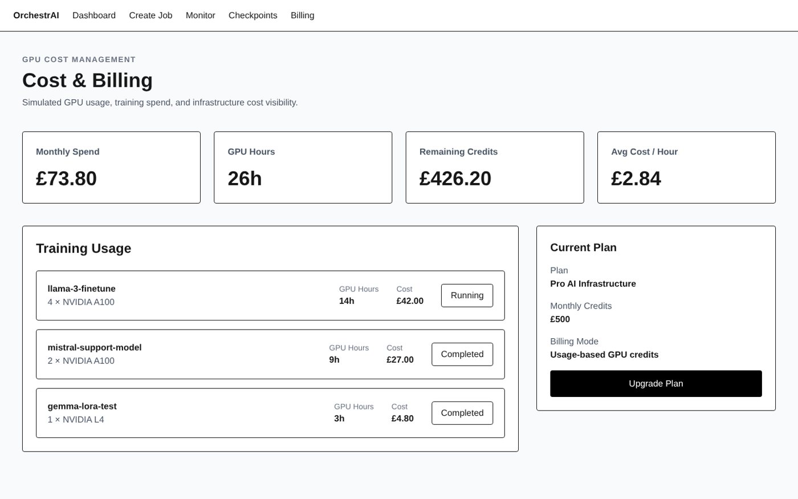

AI Infrastructure · Prototype
OrchestrAI
Simulated LLM training operations and GPU monitoring control plane.
The challenge
Fine-tuning operations involve job configuration, telemetry, logs, checkpoints and spend, requiring clear operational visibility.
Objective
Explore how AI platform teams could monitor training jobs, compute usage and costs from a unified interface.
Approach
Built a simulated Next.js/TypeScript control plane with training configuration, LoRA/FSDP/DeepSpeed options, simulated GPU telemetry, checkpoints and billing views.
Outcomes
Delivered an interactive prototype of AI infrastructure monitoring and AI FinOps workflows, built on simulated training and cost data.



